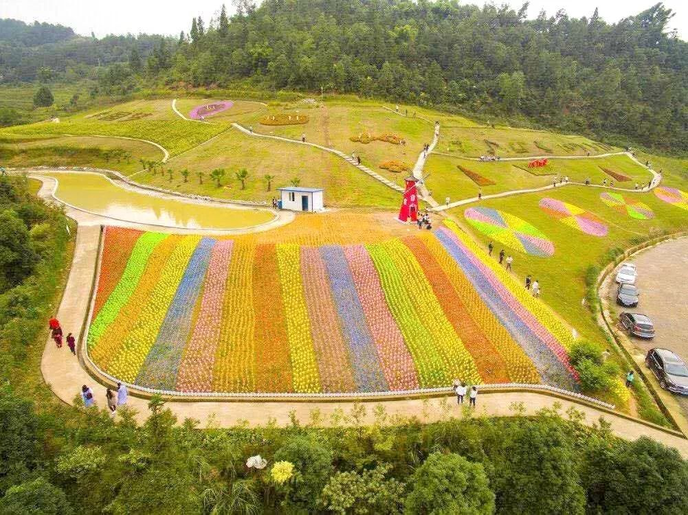
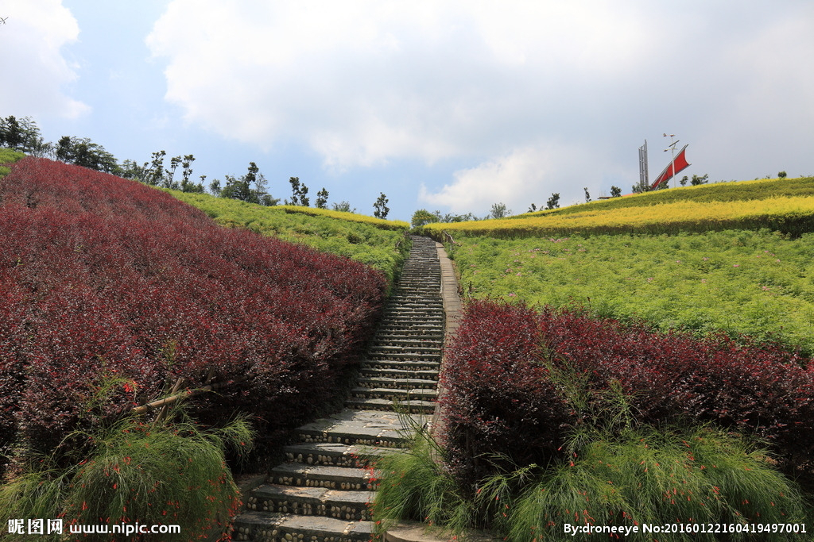

如此良辰美景，怎么会有人不为此心动？忠县出发驱车十多公里，即可来到花海乐园。赏天地精灵，玩人间精品，玻璃桥景区花田溪谷，将自然风光和网红项目完美融合。
徜徉在一望无际的花海中，闻着芬芳的花香。看着绚丽的花朵，何等的惬意与舒畅！青山碧水下一片开满鲜花的土地，在鲜花盛开时自由穿梭。用律动的音乐装饰自我，化身一个自在的逍遥客。
梁平、垫江方向：沿沪蓉高速——张南高速——沪渝高速——忠县下道——走103省道直达黄金镇（全程120分钟左右）
万州方向：沿双河口——103省道直达黄金镇（全程90分钟左右）
石柱方向：沿沪渝高速——忠县下道——103省道直达黄金镇（全程60分钟左右）
丰都方向：沿沪渝南线高速——朱家沟互通——银百高速——罗家湾互通——沪渝高速——忠县下道——103省道直达黄金镇（全程90分钟左右）
重庆方向：沿沪渝高速——忠县下道——走103省道直达黄金镇（全程150分钟左右）